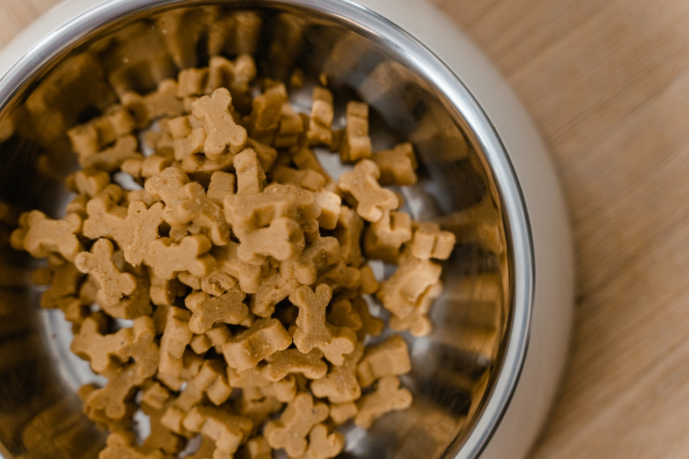
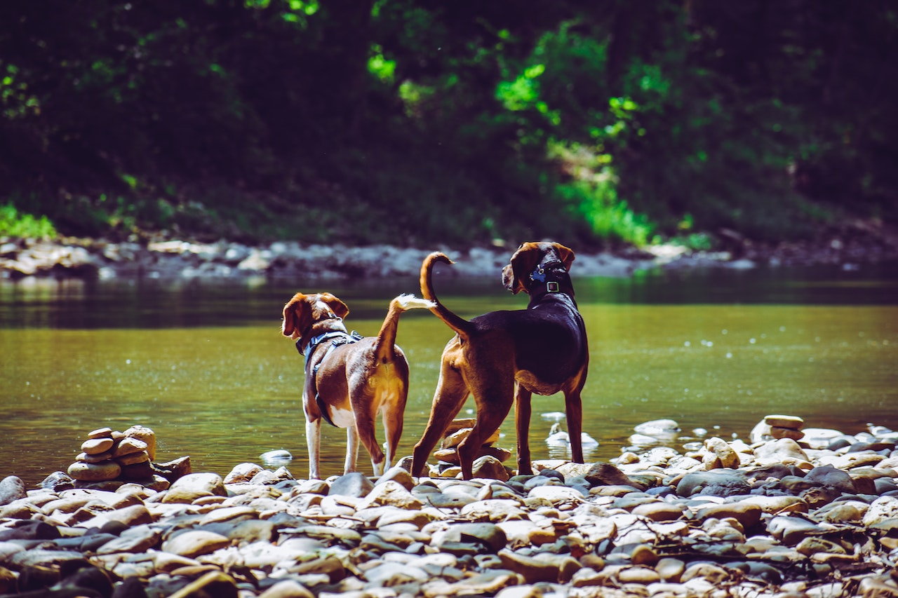
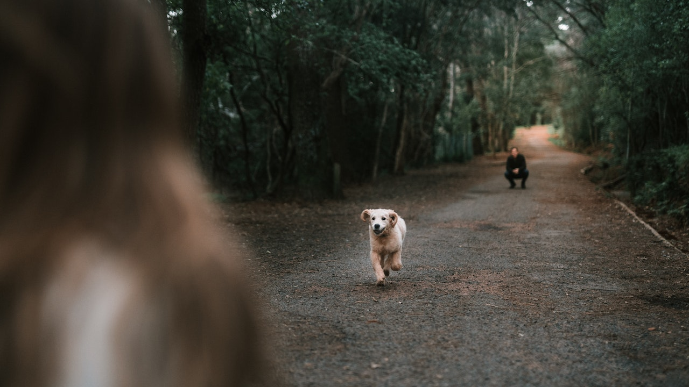
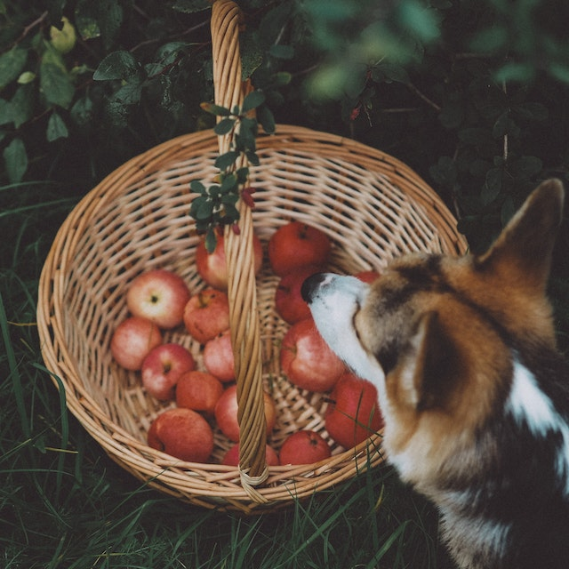

<!DOCTYPE html>
<html lang="en">
  <head>
    <meta charset="UTF-8" />
    <meta http-equiv="X-UA-Compatible" content="IE=edge" />
    <meta name="viewport" content="width=device-width, initial-scale=1.0" />
    <meta
      name="description"
      content="Mejora la salud de tu perro, las necesidades nutricionales son diferentes para cada mascota dependiendo de su raza y actividades"
    />
    <link href="https://unpkg.com/aos@2.3.1/dist/aos.css" rel="stylesheet" />
    <link
      href="https://cdn.jsdelivr.net/npm/bootstrap@5.2.3/dist/css/bootstrap.min.css"
      rel="stylesheet"
      integrity="sha384-rbsA2VBKQhggwzxH7pPCaAqO46MgnOM80zW1RWuH61DGLwZJEdK2Kadq2F9CUG65"
      crossorigin="anonymous"
    />
    <link rel="stylesheet" href="../css/style.css" />
    <link rel="preconnect" href="https://fonts.googleapis.com" />
    <link rel="preconnect" href="https://fonts.gstatic.com" crossorigin />
    <link
      href="https://fonts.googleapis.com/css2?family=Keania+One&family=Kenia&family=Ranga:wght@400;700&display=swap"
      rel="stylesheet"
    />
    <title>SemperFidelis|Nutricion especifica para cada perro</title>
  </head>
</html>
<body>
  <header class="navbar navbar-expand-lg p-3">
    <div class="container-fluid">
      <h1>SemperFidelis</h1>

      <a class="navbar-brand" href="#"></a>
      <button
        class="navegacion navbar-toggler"
        type="button"
        data-bs-toggle="collapse"
        data-bs-target="#navbarNav"
        aria-controls="navbarNav"
        aria-expanded="false"
        aria-label="Toggle navigation"
      >
        <span class="navbar-toggler-icon"></span>
      </button>
      <nav class="navegacion__inicio collapse navbar-collapse" id="navbarNav">
        <ul>
          <li class="nav-item">
            <a class="nav-link" aria-current="page" href="../index.html"
              >Inicio</a
            >
          </li>
          <li class="nav-item">
            <a class="nav-link" href="./nutricion-especifica.html"
              >Nutrición especifica</a
            >
          </li>
          <li class="nav-item">
            <a class="nav-link" href="./registrarme.html">Registrarme</a>
          </li>
          <li class="nav-item">
            <a class="nav-link" href="./accesorios.html">Accesorios</a>
          </li>
          <li class="nav-item">
            <a class="nav-link" href="./productos.html">Productos</a>
          </li>
          <li class="nav-item">
            <a class="nav-link" href="./razas-perros.html">Razas</a>
          </li>
        </ul>
      </nav>
    </div>
  </header>

  <main>
    <section class="especifica container">
      <h1 class="especifica__titulo">
        Nutrición especifica para el cuidado de la <strong>salud</strong>
      </h1>
      <div class="especifica__salud fs-4 d-flex flex-xxl-row">
        <p class="especifica__parra">
          <strong>Los alimentos balanceados</strong> de alta calidad son
          formulados por equipos de especialistas, prestando especial atención a
          las necesidades nutricionales específicas de cada perro según su
          tamaño y etapa de vida. Sin embargo, el nivel de actividad también va
          a modificar estos requerimientos por lo que un alimento que ha sido
          diseñado para un perro de familia con actividad promedio brindará
          nutrientes específicos para mantener una adecuada digestión, un pelaje
          brillante y la salud dental. La diferencia más evidente entre un
          alimento “normal” y uno específico tiene que ver con el aporte
          calórico. Es claro que un perro que se ejercita regularmente necesita
          más energía para mantener movimiento y el trabajo mental. Además, las
          fuentes a partir de las cuales puede obtener esta energía varían de
          acuerdo con el nivel y a la duración del esfuerzo que esté realizando.
          Obtienen energía de tres clases de nutrientes que priorizarán según la
          intensidad y la duración del esfuerzo que realicen.
        </p>
        
      </div>
    </section>

    <section>
      <div class="nutricion container text-start">
        <div class="col d-lg-flex flex-lg-row gap-4">
          <div class="nutricion__izquierda col">
            <h2 class="nutricion__titulo fs-2">
              ¿Que es la <strong>nutrición específica</strong>?
            </h2>
            <p class="fs-4">
              Cada fórmula individual está diseñada para brindar el nivel exacto
              de antioxidantes naturales, vitaminas, fibra, prebióticos y
              minerales que son esenciales para las necesidades de salud únicas
              de tu mascota.
            </p>
          </div>
          <div class="d-flex align-items-center col">
            
          </div>
          <div class="col fs-4">
            <p>
              Los <strong>perros</strong> son animales ancestralmente
              carnívoros. Tienen dientes afilados y puntiagudos para desgarrar
              la carne y triturar huesos, y un tracto gastrointestinal mucho más
              corto que el de los herbívoros, diseñado para la digestión de
              carne (que no necesita fermentación).
            </p>
          </div>
        </div>
      </div>
    </section>

    <section class="semper container-fluid text-center">
      <div class="semper__alimento">
        <div class="container">
          
        </div>
        <div class="semper__verdades container">
          <h3 class="semper__titulo">Verdades en la nutrición del perro</h3>
          <p class="semper__parrafo">
            Muchas veces hemos escuchado que los perros solo pueden consumir
            alimentos especiales y que tenemos prohibido darle de nuestra comida
            porque podría generar grandes daños irreparables en su salud, sin
            embargo, no siempre es así. <br />
            Es importante no hacer cambios bruscos en la alimentación de sus
            mascotas porque puede generar serios problemas en su salud. Se debe
            a que las exigencias nutricionales son diferentes para cada tipo de
            perro, no es lo mismo un Beagle, un Chihuahua o un Gran Danés. Es en
            ese sentido, que la alimentación suele cambiar dependiendo del peso,
            actividad y tipo de raza.
          </p>
        </div>
        <div class="container">
          
        </div>
      </div>
    </section>

    <article class="semper__cuantasveces text-center">
      <div class="semper__durantedia">
        <h5 class="semper__subtitulo">
          ¿Sabes cuantas veces debe comer un perro durante un día?
        </h5>
        <p>
          Para que tu amigo canino tenga una buena salud es importante que desde
          cachorro sepas cuál es la <strong>alimentación adecuada</strong> para
          perros cachorros, y de esta manera le puedas brindar una nutrición y
          un cuidado adecuado. Según la raza, se recomienda que se alimente una
          a dos veces al día. Si tu perro es pequeño, su barriguita también lo
          será y tal vez necesite alimentarse con mayor frecuencia, aunque en
          menor cantidad. Del mismo modo, las razas más grandes que tienen
          tendencia a tragar con rapidez la comida, puede beneficiarse de dos
          comidas más pequeñas en lugar de sola una bastante copiosa. Comer con
          velocidad (engullir) un montón de comida a la vez puede provocar
          problemas intestinales.
        </p>
      </div>
    </article>
  </main>
  <footer class="footer">
    <div class="footer__redes">
      <span class="footer__span">Seguinos en:</span>
      <div class="footer__logoredes">
        
        
        
        
      </div>
    </div>

    <div class="footer__enlaces">
      <span class="footer__span">Enlaces de utilidad</span>
      <i>Politicas de privacidad</i>
      <i>Cambios y devoluciones</i>
      <i>Preguntas frecuentes</i>
    </div>

    <div class="footer__ayuda">
      <span class="footer__span">Ayuda y contacto</span>
      <i>Llamanos al 0000000</i>
      <i>Escribenos</i>
      <i>Servicio de atencion al cliente</i>
    </div>
  </footer>
  <script
    src="https://cdn.jsdelivr.net/npm/bootstrap@5.2.3/dist/js/bootstrap.bundle.min.js"
    integrity="sha384-kenU1KFdBIe4zVF0s0G1M5b4hcpxyD9F7jL+jjXkk+Q2h455rYXK/7HAuoJl+0I4"
    crossorigin="anonymous"
  ></script>
</body>
